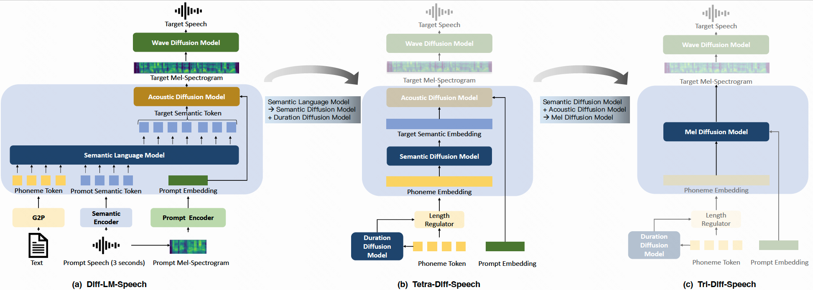

Minimally-Supervised Speech Synthesis with Conditional Diffusion Model and Language Model: A Comparative Study of Semantic Coding
Model Architecture
|  |
High Quality Data (1 hour)
| Prompt | Synthesized Speech | ||
|---|---|---|---|
| Target text 1 "钟上的时针指明这正是夜晚和睡觉的时候。" | |||
| Target text 1 "从地窖浮到地面的种子发了芽，长得又高又壮。" | |||
| Target text 1 "打破男性甚至是女性对于女性美的刻板印象。" | |||
| Target text 1 "瑞星公司为应对本次病毒成立应急处理小组" | |||
| Target text 1 "发现美国总统对犹太人的遭遇毫无兴趣" | |||
| Target text 1 "其次就是不单单街电完成了巨额融资。" | |||
| Target text 1 "要是如此每年的进士一箩筐一箩筐的出" | |||
| Target text 1 "就要付出近三亿英镑约二十六亿人民币" | |||
| Target text 1 "好在迷彩元素尽自己本能在收紧腰身" | |||
| Target text 1 "谁都比不过曾经叱咤内地歌坛的孙悦" | |||
| Target text 1 "我不要我一边捂着肚子一边叫我不要去山婆婆那儿" | |||
Low Quality Data
| Prompt | Synthesized Speech (30 minutes) | Synthesized Speech (15 minutes) | Synthesized Speech (5 minutes) |
|---|---|---|---|
| Target text 1 "所以酒量是天生的，身体是自己的，喝到位就得了。" | |||
| Target text 1 "用户可以通过快手APP来创作自己的短视频内容。" | |||
| Target text 1 "快手数字人可以帮助用户实现从现实到虚拟、从自然到人工的转化。" | |||
| Target text 1 "这条全长一千九百六十公里的高速路串起了长江经济带的六个城市、三大城市群。" | |||
| Target text 1 "所以处女座就会操心，替自己操心，替身边的人操心。" | |||
| Target text 1 "煮出来的茶汤就不会有苦涩感。" | |||
| Target text 1 "但是这个药确实对口腔溃疡的治疗非常不错，那到底怎么用呢？" | |||
| Target text 1 "您好，欢迎致电，请问有什么可以帮到您？" | |||
| Target text 1 "这一款很适合您的气质，您可以试戴一下。" | |||